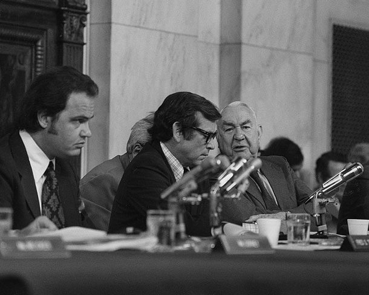
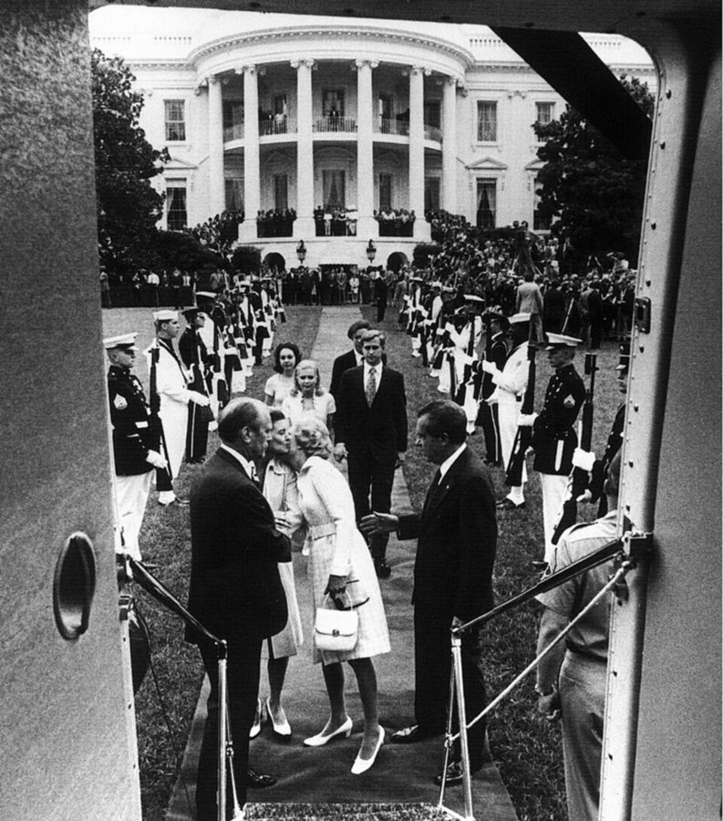
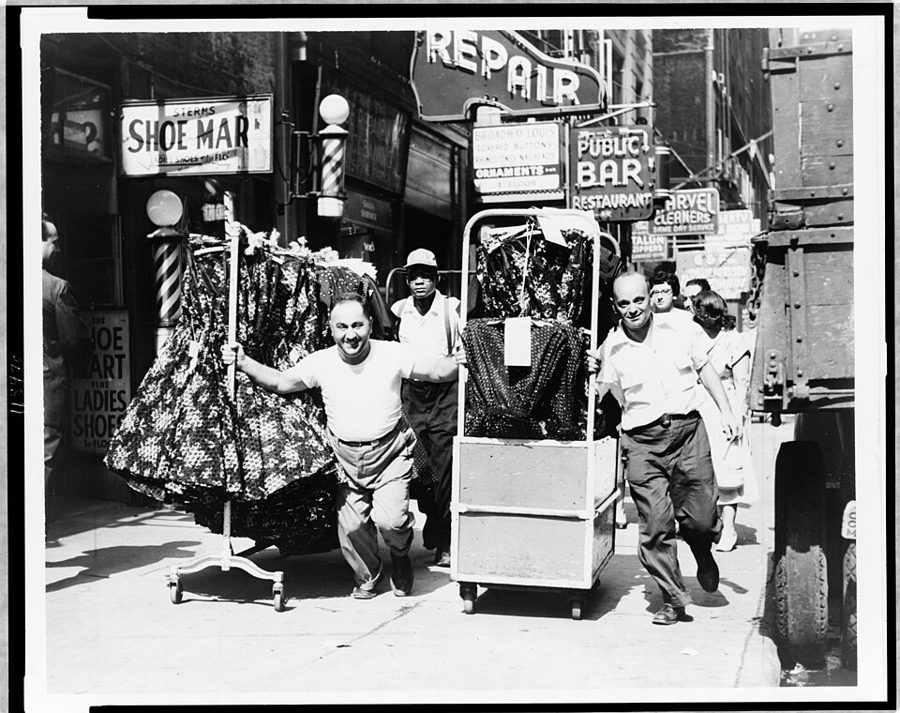

这一页在做什么
接上一页：秘书辞职、第一次出国之后。五十二到五十四岁，人在胡佛研究所，想回去写思想史，种族的话题又放不下。十封信，九封是他写的：给老师和旧识的两封，一篇回书评人的长文，四封写给不认识或不熟的人，两封旅途见闻；另有一封名学者的来信。
读的时候留意口气：玩笑话多，哪句是当真的要自己分。
1982 1983 1984 1985
胡佛研究所，斯坦福
9–11 月环球旅行
Mrs. G / Chuck 回 Jencks Riesman 来信 编辑 / Ford / Ervin Bill Jack / Joel
本站示意图。一个圆点是他写的一封信，方块是别人写来的。空心的那一个是回 Jencks 的文章，书里没给日期，书评登在 1983 年 3 月，回应在那之后。1982 年 10 月以前的信在上一页。
这一页的串场文字比前几页多，而且有两段很要紧：一段讲他为什么停下手里的书去写 Civil Rights ，一段讲他怎么又成了报纸专栏作者。这两件事信里都没有，只在串场里。
收信人和提到的人
这一页有九位收信人，一位写信来的人。公众人物多，书里都给了全名；两位同事只有名，本站照书里的叫法。
Mrs. G Marie Gadsden · 霍华德的英文老师 这一页只有一封，而且是辩解：她转来一句传言，说他没工夫见非洲来的客人。信只印了两段，口气还是熟人之间的玩笑。
Chuck Chuck Stone · 黑人记者、专栏作者 他为一本没出成的人物访谈录采访的对象之一。当时在哈佛的 Kennedy School 住校一年。信是访谈之后的道谢，后半截全在挖苦哈佛。
Christopher Jencks 社会学者 · 书评的作者 在《纽约书评》上分两期评他的两本书。他的回应不是私信，是登在同一份刊物上的公开答复，书里只印了开头。
David David Riesman · 哈佛的社会学家 · 写来的 这一页唯一的来信。两人断断续续通信，他寄去新书，Riesman 回信谈读后感，也谈他计划中的下一本。称呼是 Dear Tom。
Editors Modern Photography 杂志的编辑部 一封读者来信。他是多年的摄影爱好者，不满这本摄影杂志的专栏谈起了政治。被点名的 Julia Scully 是专栏作者。
Mr. Ford 亚拉巴马州的一位黑人市长 · 书里只给了姓 素不相识。他在《商业周刊》上读到这位市长主张对青少年放宽最低工资，写信去表示支持，顺带讲了自己少年时打工的事。
Senator Ervin Sam Ervin · 前参议员 因调查水门事件出名。Ervin 先来信夸他的新书（来信没印），这是回信。客气话之外有两段实话：一段说特赦，一段说新书。
Bill William F. Buckley · National Review 的创办人 把别人写来的一封抗议信转给他看。回信只有两句，是同一阵营的熟人之间的刻薄话。
Martin Kilson、Harvey Mansfield 只被提到 · 都是哈佛的教授 Kilson 投稿批评 Mansfield，被退稿后写信向 Buckley 抗议。给 Bill 的信里被挖苦的是 Kilson。
Jack 胡佛研究所的同事 · 书里只有名 环球旅行途中从希腊写的信，报平安兼说笑话。
Joel 杜克大学的同行 · 书里只有名 旅行回来后补回的一封信，讲这一趟的见闻怎样印证了他原来的看法。
Mary 妻子 · 这一页不是收信人 串场文字说 1984 年 9 月两人一起出发，他忙着收集材料，她当游客。给 Jack 的信里的 we 就是他们俩。
两个 Ford。 1984 年 3 月那封信的收信人 Mr. Ford 是亚拉巴马的市长。6 月给 Ervin 的信里的 President Ford 是前总统 Gerald Ford，1974 年特赦了尼克松。两封信挨着，别串了。
这一页的 Mary 是妻子。 不是姐姐 Mary Frances，也不是 60 年代那位研究生。另外，信里的 Chuck、Bill、Jack、Joel、David 都只是称呼：Chuck、Bill、David 的全名在串场文字里，Jack 和 Joel 书里没给，本站不猜。
信件地图
一条是一封信。斜体字是那封信正文开头的几个词，照这一版屏幕上的字抄的，在 Kindle 里搜它就能跳过去。编号是黄底的，是别人写来的信；这一页有一封。「留意」只给方向，答案在信里。
I have been traveling and without 1982 年 10 月 4 日 · 写给 Mrs. G 留意：传言说了什么；他拿跳伞打的那个比方，是在承认还是在否认。It was good to see you 1982 年 10 月 4 日 · 写给 Chuck 留意：晚餐上别人给了什么建议；他对哈佛的旧账记到了哪一年；同学会去不去。If imitation is the sincerest form 没写日期，1983 年 · 给《纽约书评》的答复 留意：每一条的格式都一样，先摆什么、再摆什么。最后一条为什么没有引文。Thank you so very much for 1983 年 10 月 18 日 · David Riesman 写来 留意：信里的 you and I 把谁和谁放在一边；他把下一本书的主题追到了哪位思想家。Julia Scully's column in the January 1984 年 1 月 3 日 · 写给摄影杂志的编辑部 留意：他反对的是专栏的立场，还是它出现的地方；他举的反例是哪两件事。One of the most heartening actions 1984 年 3 月 27 日 · 写给 Mr. Ford 留意：钱和经验他把哪个放前面；他怎么说自己少年时的老板；结尾提到的职位是谁的。When I returned from some travels 1984 年 6 月 18 日 · 写给 Senator Ervin 留意：他什么时候把车停到了路边；最后一段的 good people 是褒还是贬。Thanks for the copy of Kilson's 1984 年 8 月 29 日 · 写给 Bill 留意：一共两句。comic relief 说的是谁的信；第二句是安慰还是加码。We are now in Greece, recuperating 1984 年 9 月 26 日 · 写给 Jack 留意：四段里有三个玩笑，各藏着一个当年人人知道的说法。哪一句不是玩笑。I have been overseas for a 1984 年 11 月 21 日 · 写给 Joel 留意：哪些见闻是「印证」，哪一个是「意外」；他把意外归到什么原因上。
背景：作者默认你知道的事
想写的书和放不下的书
思想史：他想写的
种族与族群：放不下的
Marxism 1982 年已在写，1985 年出版
A Conflict of Visions Riesman 信里谈的那本，1987 年出版
Ethnic America 1981 年。Jencks 评的两本之一
The Economics and Politics of Race 1983 年。换到别的国家再比一遍
1984 年环球旅行：样本还要更大
Civil Rights: Rhetoric or Reality? 1984 年。为两个周年赶出来的小书
New Black Voices 做了访谈，没有出版
本站示意图，出版年份是本站查的。右栏前三格是一条线：串场文字说，批评者不接受 Ethnic America 的论点，他就拿别国的族群再比一遍；书还没出，又觉得样本不够。
串场文字说，1984 年是《民权法案》二十周年、Brown 案判决三十周年，他料定纪念文章会是一个调子，于是放下手里的两本思想史，先写了 Civil Rights 。他把它算作「不是想写、是该写」的那一类书。给 Ervin 的信里说的 painful book 就是它。
《纽约书评》上的一来一回
The New York Review of Books 是美国知识界分量很重的书评刊物，立场偏左，长文多，被评的人常写信反驳，刊物会登出来。1983 年 3 月，社会学者 Christopher Jencks 在上面连着两期评他的 Ethnic America 和 Markets and Minorities 。
Jencks 在这本书的 60 年代部分出现过：和 Riesman 合写黑人院校那篇文章的就是他。书里只有索维尔这一边的答复，Jencks 的原文要另找。
Kennedy School 和 Chuck Stone
哈佛的 Kirkland House，今貌。给 Chuck 的信里，他说还记得毕业前坐出租车离开这里时松的那口气。Ywu01，CC BY-SA 3.0，维基共享资源 Kennedy School 是哈佛的公共政策学院，常请记者、卸任官员去住一个学期。Chuck Stone 1982 年秋天在那里，本职是费城一家报纸的专栏作者，早年给哈莱姆选出的国会议员 Adam Clayton Powell 当过助手。
信里的 dinner 是学院招待这批访客的晚餐，索维尔去采访 Stone，赶上了。
水门、特赦和 Sam Ervin

1973 年参议院水门委员会的听证会。右边白发的是主席 Sam Ervin，中间是 Howard Baker，左边是 Fred Thompson。U.S. Senate Historical Office，公有领域，维基共享资源 
1974 年 8 月 9 日，尼克松辞职后在白宫草坪上登直升机离开，左边背对镜头的是接任的 Ford。Oliver F. Atkins，公有领域，维基共享资源
Ervin 是北卡罗来纳州的民主党参议员，1973 年主持参议院的水门调查，电视直播让他家喻户晓。尼克松 1974 年 8 月辞职，一个月后继任的 Ford 宣布特赦，尼克松不再受审。
另一面：Ervin 在参议院多年反对民权立法，包括 1964 年的《民权法案》。书里没提这一层，读他夸 Civil Rights 的这封回信时该知道。
青少年最低工资，1984 年
最低工资为什么会让生手找不到工作，Odyssey 第 6 章的伴读讲过他的理由。1984 年的新情况是：里根政府提议夏季对青少年降低最低工资标准，工会和多数民权组织反对，一些黑人市长却表示支持，全国黑人市长会议（National Conference of Black Mayors）那年 4 月也附条件表了态。
所以他信里说 heartening：黑人政界里有人站到了他这一边。反对者的理由是雇主会拿便宜的少年工顶掉成年工人。
Buckley 和 National Review
William F. Buckley，1985 年 1 月，里根第二次就职典礼上。SPC 5 Bert Goulait, US Military，公有领域，维基共享资源 Buckley 1955 年创办 National Review ，这是美国保守派最主要的杂志；他还主持电视辩论节目 Firing Line ，上一页的串场提过索维尔去做客。两人这时已经熟到互称名字。
被退稿的 Kilson 和被批评的 Mansfield 都在哈佛教政治学，立场一左一右。
1984 年的环球旅行
加州
英国
以色列
希腊 9 月 26 日给 Jack
印度
香港
新加坡
澳大利亚 珀斯、墨尔本、悉尼
斐济
檀香山
11 月 21 日给 Joel
到家以后写的
本站示意图，只表示先后，不表示方位和距离。站点照串场文字列的顺序。蓝色的两处是这一页两封旅行信写出的地方。给 Joel 的信里还提到马来西亚，串场文字的站点里没有列。
这一趟是胡佛研究所出的钱，目的是给族群研究找更多国家的材料。给 Joel 的信里说以色列让他意外。当时的情况是：以色列 1984 年的物价一年里涨了好几倍，是它经济最乱的一年。他在信里把收入低归到政治体制和官僚上。

纽约的服装区（Garment District），二十世纪中叶，街上推衣架车的工人。他十几岁时在这一带的制衣厂当过送货的小工。给 Joel 的信拿这段经历垫了一个玩笑：这一行里当年犹太裔和意大利裔最多。New York World-Telegram and the Sun staff photographer，公有领域，维基共享资源 Odyssey 里讲过这一段
回忆录对这几年写得很少：第 11 章下半用一段话带过出国旅行，其余几乎没提。倒是有两封信往回够到了回忆录前面的章节。
离开哈佛的那辆出租车 Odyssey 第 5 章（下） 回忆录说他没等毕业典礼，留了个转寄地址让学校寄文凭，坐进出租车时如释重负。给 Chuck 的信是 1982 年当面又说了一遍，同一个画面，还多出两件事：二十五周年同学会去不去，以及将来有钱留给哪所学校。
去那一页 → 十几岁时的那些工作 Odyssey 第 3 章 回忆录按顺序讲了离家后的几份工：服装区的制衣厂、机加工车间。两封信把它们拿来当论据：给 Mr. Ford 的信用来讲最低工资，给 Joel 的信用来讲以色列。信里没说那位严厉的老板是哪一个，本站不对号。
去那一页 → 环球旅行 Odyssey 第 11 章（下） 回忆录只有一句：1982 年开始出国，1984 年和 1987 年两次环球，细节写的都是 1987 年那次。1984 年这一趟的路线、以色列的见闻、旅馆的玩笑，只在这里有。
去那一页 → 和 Jencks 的笔仗、专栏、几封陌生人的信 回忆录没写 Jencks 的书评、Civil Rights 这本书、Scripps-Howard 的专栏、Ervin 的来信、没出成的 New Black Voices ，回忆录都没提。回忆录讲 80 年代，重心在他和里根政府的距离；这一页是同一时期他书桌上的事。
这一版的错字
只收会让人读不懂、或者在 Kindle 里搜不到的。第一格是屏幕上的字，照抄的；第二格是本站有把握的原字。问号前多出来的撇号全书都有，见「开读之前」，这里不列。
屏幕上的字 应为 在哪 1 shall leave it to Jencks I shall leave it to Jencks 回 Jencks 的文章最后一句。大写的 I 认成了数字 1 A ('on/lic7 q/' Visions A Conflict of Visions Riesman 来信前面的串场。书名是斜体，认得最差 The Ec•ono,n cs and Politics The Economics and Politics 同一段，另一个书名。搜 Economics 搜不到这一句 could he seen again could be seen again 同一段靠后。be 认成了 he lie commented on that hook He commented on that book 紧接着的一段。一句里错了两个字 how misleading it would he how misleading it would be 1984 年开头的串场 a little hook titled Civil Rights: Rhetoric or Really? a little book titled Civil Rights: Rhetoric or Reality? 同一段。书名的最后一个词错了 selfcongratulatory self-congratulatory 给摄影杂志的信第一句。连字符丢了 best known fir his role best known for his role 给 Ervin 的信前面的串场 Harvard processor Martin Kilson Harvard professor Martin Kilson 给 Bill 的信前面的串场 National Revienw magazine National Review magazine 同一句 India--0r Hong Kong India—or Hong Kong 给 Jack 的信最后一句。字母 o 认成了数字 0 As one. who once worked As one who once worked 给 Joel 的信第二段。多了一个句号
这一页没有做成图片的脚注或信头。 回 Jencks 的那篇文章里，每一条前面的 STRAW MAN 和书名在原书里是小标题的样子，这一版排成了普通正文，一条挤成一段，读的时候自己在书名前面断一下。
词与短语
按信的顺序排，串场文字里的词条归到它后面那封信的组里。斜体小字是那句话里的几个词，照这一版屏幕上的字抄的（撇号是直的），在 Kindle 里搜它就能跳到那一句。单个的生词长按就能查，这里收的主要是词典帮不上忙的。
1982 年 10 月 · 给 Mrs. G
erstwhile mentor
… with my erstwhile mentor and dear friend, …
从前的导师
erstwhile 是文绉绉的 former。她早就不是他的老师了，所以后面补一个 dear friend。
who “they” are
… I don't know who “they” are who …
所谓「他们」是谁
传话里不具名的 they。给它加引号，等于说：这话没有出处。后面 these Africans 的引号也是在引那句传言。
have my office number removed
… had my office number removed from directories. …
让人把我办公室的房号删掉
have + 宾语 + 过去分词：是他自己要求的。directories 是校内的通讯录。
go skydiving
… saying that I don't go skydiving with …
去跳伞
比方的要害：他跟谁都不跳伞，所以「不跟黑人跳伞」这话没错，可听的人会想歪。
true in itself
… in itself, but somewhat misleading. …
单看这句话是真的
somewhat misleading 是往轻里说，实际意思是完全误导。前面 blacks 和 true 之间的短横应是破折号。
1982 年 10 月 · 给 Chuck
sketches
… a book of sketches of blacks with …
人物速写
不是画。指一篇写一个人的短文。
in residence
… spending a year in residence at Harvard's …
驻校
学校请外面的人来住一段时间，不教固定的课。和 60 年代那页的 in absentia 正相反。
hand out
… advice that was handed out at dinner. …
派发
像发传单一样发建议，带着瞧不上。建议的内容要从下两句倒推：多找名教授聊天，多去旁听。
audit
… to be gained by auditing their lectures …
旁听
美国大学的说法：听课，不做作业，不拿学分。不是审计。
honchos
… the Kennedy School honchos are advocating …
头头们
美国俚语，来自日语的「班长」，朝鲜战争时的美国兵带回来的。用在学院领导身上是不恭敬的。
get into shape
… trying to get into shape by watching …
把身体练好
shape 是体能状态。整句是说：不读书光听讲，等于看电视练身体。
broken down by sex
… list of your employees broken down by …
按性别分列；也可读成「被性搞垮了」
老笑话，靠 break down 的两个意思。他借它挖苦席间有人夸这群人 balanced：按什么分的类，才算均衡？
preciousness
… The preciousness of Harvard is no …
矫揉造作
precious 说人或风气，是过分讲究、自以为高雅。不是珍贵。
turn someone off
… when it turned me off as an …
让人倒胃口
和关灯无关。
forwarding address
… I left a forwarding address so that …
转寄地址
搬走时留给邮局或学校的新地址。意思是：毕业典礼我不参加，文凭寄来就行。
mellow
… Having mellowed somewhat over the years, …
脾气变温和了
本来说酒和水果熟了。上一页给 Maria 的信里他也拿这个词问过自己。
mystique
… encountered the Harvard mystique once more …
那层神秘的光环
法语来的词。别人敬畏、他不买账的那种气氛。
6-to-5 and pick 'em
… it is 6-to-5 and pick 'em. It …
五五开，去不去两可
赌马、赌拳的行话。6 比 5 是差不多最接近的赔率，pick 'em 是「随你挑一边」。合起来：胜负难料。
leave behind
… any money to leave behind to an …
身后留下
说的是遗赠。美国的大学靠校友捐款，这句等于当面说：哈佛别指望我。
1983 年 · 回 Jencks
straw men
… began by itemizing Jencks' straw men. …
稻草人
辩论用语：先把对方的观点改成一个好打的样子，再去打它。这篇答复通篇就这一个指控。
imitation is the sincerest form of flattery
… imitation is the sincerest form of flattery, …
模仿是最真诚的恭维
英语里的老话。他接着往下编：那扎稻草人就排第二。意思是你驳不了我真说的话。
a close second
… men must be a close second. No …
紧随其后的第二名
赛跑的说法。
voluminous
… Christopher Jencks' voluminous review of Ethnic …
长篇大论的
volume 是卷。说一篇书评 voluminous，是嫌它长。后面加引号的 astonished 是学 Jencks 的用词。
put a price on
… the market puts a price on discrimination, …
让……要花钱
他从自己书里引的话：竞争让歧视变贵，所以会减少，但不一定消失。和对方转述的「趋于消失」差的就是后半句。
make it a point to
… on ethnicity make it a point to show …
特意要
不是「指出一点」。
leave it to someone to
… leave it to Jencks to supply the …
那就劳驾某人来……
反话。前面列了一长串页码，证明自己写的正相反；这句是说：你说我写过，页码你来找。
eat a whole egg
… to eat a whole egg to know …
把整个蛋吃完
2007 年的串场，解释为什么只印开头：臭蛋尝一口就知道。对 Jencks 很不客气，虽然前面刚叫过他 serious scholar。
1983 年 10 月 · David Riesman 来信
thesis
… objected to its thesis that the differing …
论点
不是学位论文。that 后面一长串就是论点的内容：族群自带的文化，比别人怎么对待他们更能决定他们的处境。
sporadically
… with whom I exchanged letters sporadically. …
断断续续地
这一页的串场用了两次，说 Mrs. G 也是这个词。通信都稀了。
your good letter
… and for your good letter of October …
您的来信
老派的书信客套，good 相当于 kind，不是评价信写得好。
division of labor
… for the division of labor among peoples, …
分工
经济学的词，Riesman 用到民族和国家之间。peoples 带 s 是「各民族」。这一段里对马来人、日本人的概括是 Riesman 的话。
defensive about
… I are not defensive about our limitations; …
一提就急着辩解
不是「防守」。you and I 是把索维尔拉到自己这边：咱们俩不忌讳承认短处。
prospect
… I love your prospect for a book …
设想，打算
老派用法。书还没写，Riesman 是从来信里听说的。
Ever so much
… Ever so much in contemporary ideology …
非常多的
ever so 是老派的 very。整封信的口气都比索维尔的信旧一辈。
the general will
… concept of the general will. …
公意
卢梭《社会契约论》的概念。Riesman 的意思：认定人性本善、坏在制度，推下去反而通向一切都得服从「公意」。
1984 年 1 月 · 给摄影杂志的编辑部
party line
… what the party line on these events …
统一口径
本来指政党规定的说法。他用来说纪念文章，带刺。
shoot down
… It shot down a lot of myths …
驳倒
像打飞机一样打下来。这是 2007 年他对自己那本书的评语，不是别人的。
creep up on
… Another project sort of crept up on …
不知不觉找上门
creep 是悄悄爬。说的是专栏：先是四个人轮流写、一月一篇，年底变成他一个人每周一篇。
propaganda outlets
… and publications into propaganda outlets for all …
宣传的出口
outlet 是出货口、门店。这句是串场里的总评，给下面这封信定了性。
tangential to
… as it is tangential to photography. She …
和……只擦了个边
几何里的切线：碰一下就走。句型 as A as it is B 把两条罪状并排。
on the side of the angels
… is on the side of the angels. …
站在正义一边
反话。他不是说她对，是说她自认永远对。
slant
… that photography be slanted to promote a …
带上倾向
本义是倾斜。他举的两个反例（回归宗教、扩军）是故意挑对方不会喜欢的。
rest assured
… then we can rest assured that the …
尽可放心
固定搭配。这句的逻辑：摄影这么小的事都要专门的刊物，人类存亡那样的大事更轮不到业余的来讲。
trade-offs
… its complexities and difficult trade-offs. We …
取舍
他最常用的词之一：没有十全的办法，只有拿这个换那个。
1984 年 3 月 · 给 Mr. Ford
bring in money
… to be bringing in some money to …
往家里挣钱
move up the ladder
… way to move up the ladder without …
往上爬
ladder 是职业阶梯。全信的中心比方，见下面「值得停下来的句子」。
break even on the deal
… wage and broken even on the deal. …
这笔买卖不赔
break even 是收支相抵。把雇自己说成一笔交易：按最低工资付，老板准赔。
from day one
… the minimum wage from day one, is …
从第一天起
under their belts
… get some experience under their belts, they …
到手了，攒下了
本来说吃下肚的东西。
“menial” jobs or “dead-end” jobs
… looking down on “menial” jobs or “dead-end” jobs. …
「下等」活，「没出路」的活
menial 是伺候人的、粗重的。两个词都加了引号：这是别人的叫法，他不认。
scrape together
… before I scraped together enough money to …
一点一点凑齐
scrape 是刮。
hung up over
… that groups who are hung up over …
对……心里有疙瘩
和挂电话无关。现在多说 hung up on。
a job a job
… groups who consider a job a job. …
把活儿就当活儿
consider A B：把 A 看作 B。两个都是 a job，意思是不挑。
make it
… our younger generation doesn't make it, it …
混出来，站住脚
后半句的 cabinet appointments 是在说他自己：里根当选后他推掉过内阁的职位。
1984 年 6 月 · 给 Senator Ervin
in the wake of
… to see in the wake of Watergate. …
在……之后
wake 是船驶过留下的尾迹。书信和报刊里的常用语。
pardon of his predecessor
… radio of his pardon of his predecessor. …
对前任的特赦
pardon 是总统的赦免权。两个 his 都指 Ford，predecessor 是尼克松，信里没提这个名字。
high-minded
… for the most high-minded reasons, but …
出于高尚的考虑
先替 Ford 让一步，再说 but。让步的写法和 60 年代给 Cy 的信一样。
those in high places
… leniency to those in high places, who …
身居高位的人
不是住得高。
On a happier note
… On a happier note, I am of …
说点高兴的
note 是调子。换话题的套话。给 Jack 的信里有一句 On a more mundane note ，同一个句型。
My dues were small
… freedom today. My dues were small. …
我交的这点会费不算什么
dues 是会费，pay one's dues 是为资格吃过苦。前一句说别的美国人做过更难的事，指的是为自由打过仗的人。
the threat from good people
… on the threat from good people, rather …
来自好人的威胁
Ervin 来信里的话，他表示同意：坏事常是好心人办的。good 不是反话，是这层意思。
preferential treatment
… I am researching preferential treatment programs in …
优待
他对平权法案一类政策的统称，不用官方的 affirmative action。
untouchables
… Violence against untouchables doubled in less …
「不可接触者」
印度种姓制度最底层的人，现在通称 Dalit。印度给他们保留了升学和公职的名额。
1984 年 8 月 · 给 Bill
comic relief
… comic relief on a hectic day. …
调剂气氛的笑料
戏剧术语：悲剧里插一段滑稽戏让观众喘口气。把人家一封愤怒的抗议信叫这个，是挖苦。
at his silliest and most pompous
… Kilson at his silliest and most pompous, …
他最蠢、最装腔作势的时候
at one's + 最高级：某人最……的状态。整句是：你以为这就到头了？还早。
1984 年 9 月 · 给 Jack
recuperating from Israel
… in Greece, recuperating from Israel. Actually, …
在休养，缓一缓以色列那一段
recuperate from 后面通常跟病。把一个国家放在这里是玩笑，下一句的 Actually 马上往回收。
is something else
… remaining in Israel is something else. …
那可就是另一回事了
口语：非同一般，多半是让人吃不消。说的是安检。
not a stickler for
… I am not a stickler for first-hand …
不是非要……不可的人
stickler 是死抠某条规矩的人。往轻里说：手榴弹的事，看报纸知道就够了。
walk a mile for one
… would never walk a mile for one. …
为它走上一英里
Camel（骆驼牌）香烟用了几十年的广告词是 I'd walk a mile for a Camel 。他见了真骆驼，把广告反过来说。
the gender gap
… space between these beds “the gender gap.” …
「性别差距」
1984 年大选的热词：女性选民对里根的支持率比男性低。他拿来叫两张单人床之间的空。
anxious to
… more anxious than Ronald Reagan to eliminate …
急着要
不是焦虑。里根想消掉的是选票上的差距，他想消掉的是床缝。
1984 年 11 月 · 给 Joel
gratifying
… belatedly replying to your gratifying letter of …
让人欣慰的
他回信时常用的客气词，给 Ervin 的信里也有。对方的信多半是夸他的。
rack one's brains
… people have racked their brains for the …
绞尽脑汁
rack 是拷问用的刑架。
in action
… and the Chinese in action in Malaysia …
干起活来的样子
他的意思是看一眼两群人怎么做事就明白了。这是他的看法；批评者认为这样的观察解释不了历史和政策造成的差别。
Ditto for
… Ditto for the Fijians and the …
……也一样
ditto 是「同上」。这里的 Indians 是斐济的印度裔。
garment district
… worked in New York's garment district, I …
服装区
曼哈顿中城制衣厂扎堆的一片。见背景里的照片。
Jews making less than Italians
… discovered of Jews making less than Italians. …
犹太人挣得比意大利人少
make 是挣钱。半句玩笑：在美国的族群收入统计里，他见惯的是反过来。
common denominator
… seem to be the common denominator in …
共同点
数学里的公分母。三个 case 是犹太人、华人、印度人：在外面兴旺，在本国不行。
值得停下来的句子
There is no way to move up the ladder without first getting on the ladder …— 1984 年 3 月 27 日给 Mr. Ford 的信。本站译：不先踏上梯子，就谈不上往上爬。
句型是 There is no way to A without B ：不 B 就没法 A。后半句（没引）说，对几乎所有人，上梯子都是从最底下一级上。这是他反对青少年最低工资的全部理由，压成了一个画面：最低工资锯掉的是最下面那一级。
前一句他把钱和经验排了先后，经验在前。反对的一方看的是另一头：这一级降下来，站在上面一级的成年工人会不会被挤下去。信里没有回应这一点。
… it seems to me profoundly wrong to grant leniency to those in high places, who have more responsibility and less excuse than others.— 1984 年 6 月 18 日给 Senator Ervin 的信。本站译：……在我看来，对身居高位的人从宽是大错：他们的责任比别人重，可原谅的理由比别人少。
主干是 it seems to me profoundly wrong to grant leniency to … ，it 是形式主语，真正的主语是 to grant leniency 。逗号后面的 who 从句是理由，more … less … 对着用。
停在这里，是因为它和媒体给他贴的标签对不上。特赦尼克松的是共和党总统，这时候他被人叫作里根派。前半句他先让了一步，承认 Ford 的动机可能很高尚，然后才说 but。
检查一下理解
先在心里答，再点开。答错的那题，回书里把那封信再读一遍。
1. 给 Mrs. G 的信里，他说「说我不见非洲人，就像说我不跟黑人去跳伞」。他是在承认自己不见非洲人吗？ 不是。他的意思是他几乎谁都不见，连办公室房号都从通讯录上删了；单拎出「不见非洲人」，话是真的，给人的印象是错的。他还补了一句：在斯坦福答应见的唯一一位访客，恰好是她介绍的非洲人。
2. 称呼是 Dear Tom、谈马来人和卢梭的那封信，是谁写给谁的？ 是 David Riesman 写给索维尔的，这一页唯一的来信。信里对各民族长短的概括、把当代意识形态追到卢梭，都是 Riesman 的话。落款只有 David，全名在信前的串场文字里。
3. 给 Chuck 的信里说同学会去不去是 6-to-5 and pick 'em。后来他去了吗？ 没有。那句话的意思是去和不去差不多五五开。信后面的串场文字说，二十五周年他没回去，后来的同学会也都没去，连在离哈佛二十分钟车程的布兰迪斯教书时也没去。
4. 给 Ervin 的信里让他气得把车停到路边的 President Ford，和三个月前那封信的 Mr. Ford 是一个人吗？ 不是。Mr. Ford 是亚拉巴马州的一位黑人市长，他写信去是表示支持。President Ford 是前总统，信里说的是 1974 年特赦尼克松的事，他认为那是大错。
5. 他对 Ervin 说 My dues were small，是在说那本书写起来不费劲吗？ 正相反。他刚说过那是一本写得很痛苦的书，也知道不是人人都像 Ervin 这样客气。这句是拿自己和为自由付过更大代价的美国人比：和他们相比，我交的这点「会费」算小的。
6. 给 Jack 的信里，他说自己比里根还急着消除 the gender gap。这个词在这里指什么？ 指国外旅馆给夫妻安排的两张单人床之间的那道空。这是借 1984 年大选的热词开玩笑：原意是男女选民对里根的支持率之差。同一封信里骆驼那句也是这个路数，借的是香烟广告。